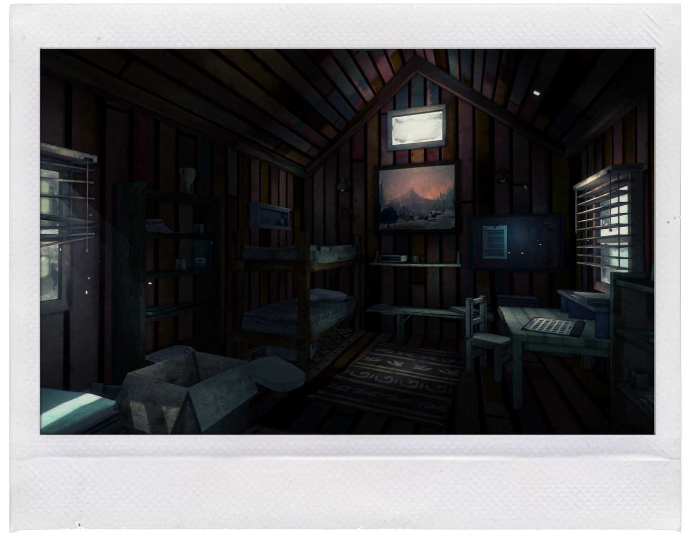

Page 1: Cold Caller
It's cold.
you sit in your office playing your 4th game of solitare of the morning.
buisness is slow at this time of year and there's not much else to do in the small office of the single bay hangar your
father bought all those years ago.
you feel the cold winter wind shift outside and the temprature in the office drops by a few degrees.
Time to fire up the wood stove.
Getting up from your desk to light the small stove you pass your old bookshelf.
There aren't many books on it's shelves anymore. At a glance you can see a couple of old books:
- The manual for your old faithful floatplane
- A map of an island far to the north that your dad use to fly to.
Crouching next to the stove, you begin the repetative task of building a fire.
As you hold a match to the old newspaper in the fire you hear a sound you've never heard before at this time of year.
The phone ringing...